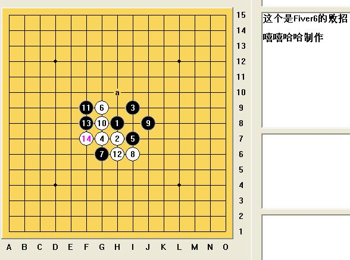

[互动棋谱]斜月经常见到软件对手下出来的14必败
#1 [互动棋谱]斜月经常见到软件对手下出来的14必败作者：wd1988 发表时间：2009-3-28 23:04:44
我在禁一下斜月二，经常看到对手开出这个斜月败14，真的是。。。用软用的太显形。这个是Fiver6的败招，一看就知

 斜月常见软败14.rar
斜月常见软败14.rar［本站用户 岳麓小棋后 于 2009-3-28 23:58:06 花5个金币送您鲜花一朵］
［本站用户 岳麓小棋后 于 2009-3-28 23:58:32 花5个金币送您鲜花一朵］
［此帖子已被 茗弈小刀 在 2009-4-22 19:15:24 编辑过］
#2 Re:斜月经常见到软件对手下出来的14必败作者：裁决殿雪月 发表时间：2009-3-28 23:10:41
不能完全归结于F6 很正常的14 只是弱罢了……［本站用户 gerbo 于 2009-3-29 5:46:38 花5个金币送您鲜花一朵］
#3 Re:斜月经常见到软件对手下出来的14必败作者：賢周 发表时间：2009-3-28 23:14:07
poor 14 only j6,k6#4 Re:斜月经常见到软件对手下出来的14必败作者：wd1988 发表时间：2009-3-29 15:49:00
J6很难下，黑大优，下得好可以完全控制外势取胜#5 Re:斜月经常见到软件对手下出来的14必败作者：刀魂 发表时间：2009-3-29 15:58:42
k6 唯一，但是白还是 被虐全盘#6 Re:斜月经常见到软件对手下出来的14必败作者：下棋思思 发表时间：2009-3-31 14:28:23
Five6强吗？也能拿去对弈。我怎么没见Five6强。14有很多种骗招。不过骗不成就速败。#7 Re:斜月经常见到软件对手下出来的14必败作者：忧郁的双眼 发表时间：2009-4-5 12:05:01
这个四年前逝水内部课就已经被杀完了
的确是弱
#8 Re:斜月经常见到软件对手下出来的14必败作者：水晶未来 发表时间：2009-4-9 19:59:09
谁说这个14是黑石点？这个14小黑没出来就有的点了。骗14有3个点常见#9 Re:斜月经常见到软件对手下出来的14必败作者：wd1988 发表时间：2009-4-10 8:39:11
谁也没说这是黑石点，不认真看贴的人还是不要说话的好
“用软用的太显形。这个是Fiver6的败招”
Fiver6=黑石？？？
#10 Re:斜月经常见到软件对手下出来的14必败作者：茗弈梓轩 发表时间：2009-4-10 10:29:04
虽然弱，但是可以从中悟出一些东西，还是很好。
#11 Re:斜月经常见到软件对手下出来的14必败作者：茗弈梓轩 发表时间：2009-4-10 10:46:14
=======上图对应的爱五子棋谱代码如下，以便你拆解：========
h8h7i9g7i7g9j8g8g6i6f9h6f8f7h10g11g10i10h9h11k8i8l7k7j6j7j5k6l5k5m6k4k3n5l8l9m5
======================================================
#12 Re:斜月经常见到软件对手下出来的14必败作者：wd1988 发表时间：2009-4-10 10:52:37
楼上是什么意思？#13 Re:斜月经常见到软件对手下出来的14必败作者：茗弈梓轩 发表时间：2009-4-10 11:04:49
 有什么高见？
有什么高见？#14 Re:[互动棋谱]斜月经常见到软件对手下出来的14必败作者：wd1988 发表时间：2009-5-17 19:15:57
走的挺好。。。#15 Re:[互动棋谱]斜月经常见到软件对手下出来的14必败作者：gerbo 发表时间：2009-5-17 19:21:03
 很弱很好.
很弱很好.#16 Re:[互动棋谱]斜月经常见到软件对手下出来的14必败作者：茗奕的飞猪 发表时间：2009-5-18 12:20:09
学写了，谢谢楼主辛苦